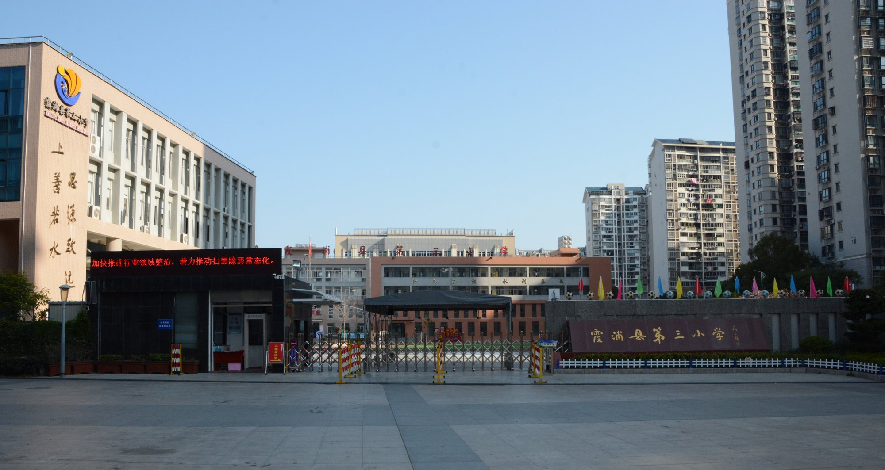
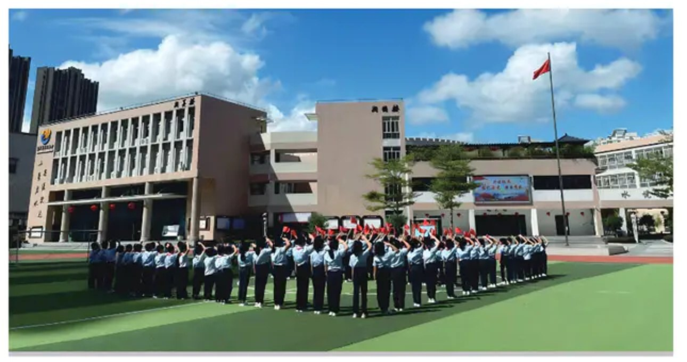
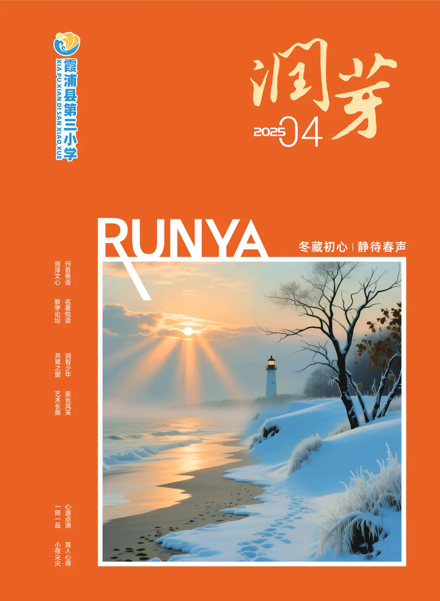
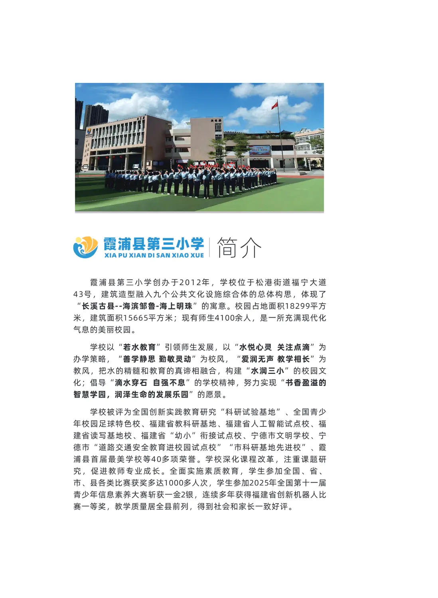
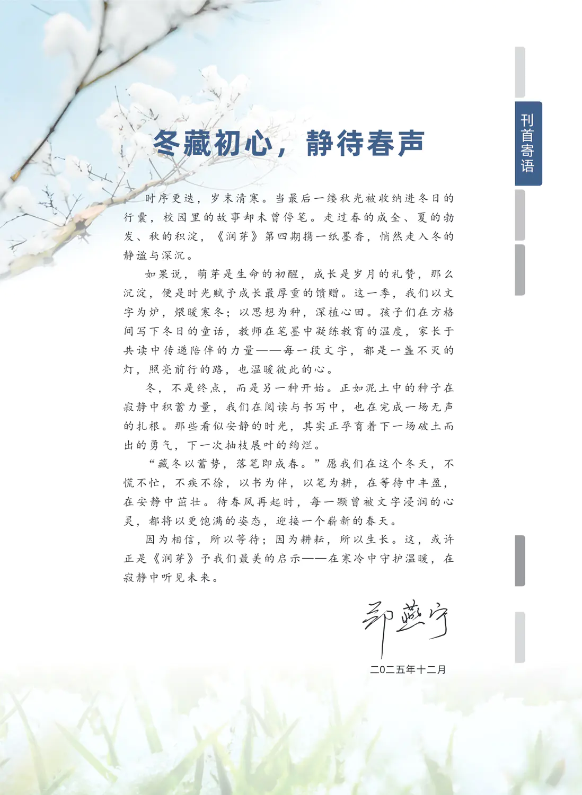
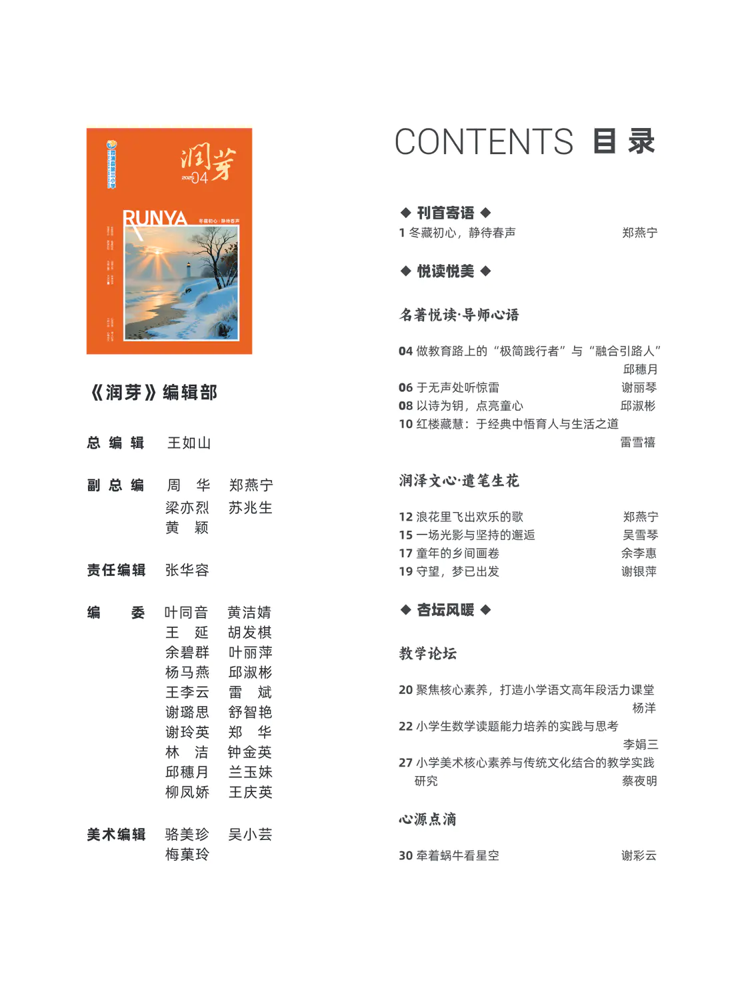
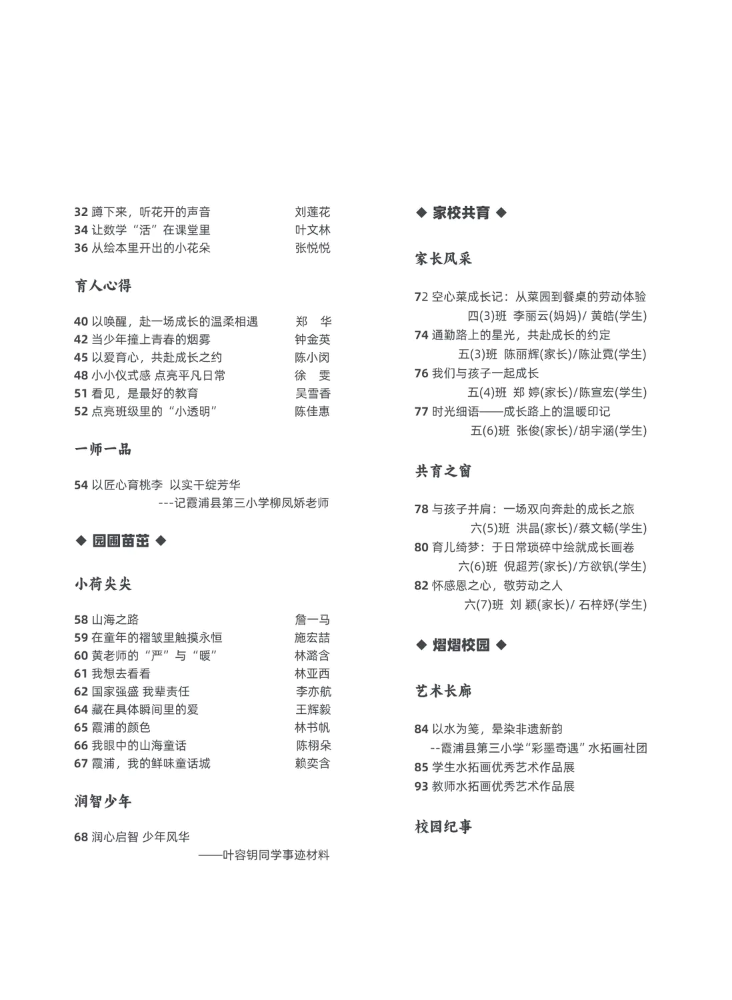

01
上善若水
水善利万物而不争。
—— 老子《道德经》
水不与万物争高下，却能抵达每一处低处。教育的姿态，也该是这样：俯身、滋养、静待。
拖动 · 旋转
以长溪古邑为根，以福宁文化为源，
把水的精髓与教育的真谛相融。
01
水善利万物而不争。
—— 老子《道德经》
水不与万物争高下，却能抵达每一处低处。教育的姿态，也该是这样：俯身、滋养、静待。
02
自强不息，久久为功。
学校精神
闽东的山海之间，最不缺的就是这股韧劲。一滴水落下没有声响，一万次落下便有了形状。
03
书香盈溢的智慧学园，
润泽生命的发展乐园。
办学愿景
长溪入海，海又成湾。学校愿做那个港湾：让每一条小小的水流，都找得到自己的方向。
03 MELT · 校标化水
一滴水落进长溪，便有了形状；
一所学校守住初心，便有了年轮。
OVERVIEW
霞浦县第三小学创办于 2012 年，是霞浦县重点民生工程。校园位于松港街道福宁大道 43 号，建筑融入九个公共文化设施综合体的总体构思，寓意「长溪古县 — 海滨邹鲁 — 海上明珠」。
学校以「若水教育」引领师生发展，把水的精髓和教育的真谛相融合，构建「水润三小」的校园文化，努力实现「书香盈溢的智慧学园，润泽生命的发展乐园」的愿景。


学校现有 61 个教学班、教职工 200 余人。学生在全国、省、市、县各级各类比赛中获奖 1000 多人次，连续多年获得福建省创新机器人比赛一等奖，教学质量居全县前列。
「让每一个孩子被看见，
让每一节课堂有光。」
PHILOSOPHY
以水喻教：水润物无声，教育亦当浸润而非灌输；水随物赋形，教育亦当因材而施。学校把水的品格，作为育人的方法。
悦，是让心灵先被接纳；点滴，是把每一处细微的成长都当作正事。教育的分量，往往藏在最小的刻度里。
静得下来，才想得进去；动得起来，才学得鲜活。静与动，是水的两面：深时为渊，急时为瀑。
好的教育不喧哗。老师把光调得柔和一些，孩子才敢把自己的影子投进来。
不是每一滴水都能立刻留下痕迹。学校相信坚持本身，就是最好的天赋。
学园与乐园并不矛盾：一间有光的教室，本来就该既有书声，也有笑声。
水润三小 · 校园文化
SCHOOL JOURNAL · 2025 年第 4 期





HONOURS
水拓画社团「彩墨奇遇」、小浪花合唱团、家校社「1+2+X」共同体、微共体协同学习——这些名字，构成了三小的日常。
40+
SCHOOL ANTHEM · 2013
海风轻轻吹我衣裳，
浪花朵朵对我绽放。长溪之水波浪涌，
浪花里飞出欢乐的歌。